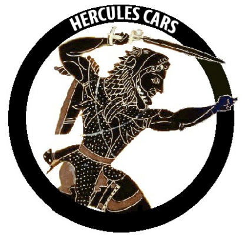
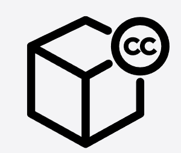

Basics of Copyright Law
Created by Scott Cormier, and licensed under a Creative Commons Attribution 4.0 International License
 Disclaimer: I am not a lawyer and this is not legal advice. This was one of my assignments, from when I was working on my Creative Commons certification, that I think has some useful information and links.
Disclaimer: I am not a lawyer and this is not legal advice. This was one of my assignments, from when I was working on my Creative Commons certification, that I think has some useful information and links.
More than 176 countries have signed the Berne Convention, one of whose principles is that copyright must be granted automatically. It also sets a minimum term of copyright protection as life of the author plus 50 years. 1.
1. The purpose of copyright
The website copyright.gov explains that “Copyright is a form of protection grounded in the U.S. Constitution and granted by law for original works of authorship fixed in a tangible medium of expression.”
While different countries have different approaches, most of them agree that authors have rights that should be protected. Now that so much written work is available online, it is even more important that creators are given credit for their work, can control how it is used, and can protect it from distortion. Copyright is usually applied automatically, once a work is fixed in a tangible medium.
2.1 Copyrightable or Not?
Different countries have agreed, in copyright treaties, that copyright applies to certain categories of works:
- Literary and artistic works
- Translations, adaptations, arrangements of music and alterations of literary and artistic works
- Collections of literary and artistic works
- And sometimes applied art and industrial designs and models, and computer software
2.2 Copyrightable or Not?
Copyright law does not cover:
- Cultural and historical contexts must be considered. Some material may have community-specific restrictions.
- U.S. government works are not protected by copyright law, and with only a few exceptions are considered to be public domain.
A creator who controls an idea's expression does not necessarily have exclusive control over the idea itself.
3. Copyright is one of many types of intellectual property.
Rights have been established by law, called intellectual property (IP) rights, that protect creators from those who would misuse their creative works. Copyright is one type of IP, along with trade secrets, publicity rights, and moral rights. Trademark law and patent law are particularly interesting to me.
Trademark law is specific to producers of goods and services, who need to prevent the public from confusing their products with someone else's. Symbols or specific brand names can help a company succeed in a competitive market, where loyalty and public trust must be earned.
Patent law is particularly relevant to inventors, who profit from time-limited monopolies on their inventions. “Patents typically give inventors the exclusive right to make, have made, use, have used, offer for sale, sell, have sold, or import patentable inventions.”
4. Receiving copyright protection.
In most countries, once a person takes an original idea and turns it into something tangible, copyright is automatically granted. Once words are written down, or songs are recorded, or, depending on the country, computer software is saved to a computer, copyright law protects the creator by granting certain exclusive rights. We also must not forget that users have certain rights of use, that are defined by copyright laws too.
It is often a good idea to register your work, officially, with a local copyright authority. In some countries, registration might even be necessary in cases where your rights are challenged in some way and copyright laws must be enforced.
5. The public domain.
The terms of the copyright protection of a creative work include its entry into the public domain, where it can become an asset to everyone, and part of our cultural heritage. A large, and growing number of works in the public domain can be freely copied, adapted, and shared.
Works enter the public domain in one of four ways:
- The copyright expires.
- The work was never entitled to copyright protection.
- The creator dedicates the work to the public domain before copyright has expired.
- The copyright holder failed to comply with formalities to acquire or maintain their copyright.
6. Fair use or fair dealing.
Copyright is not absolute, and if someone is using a copyrighted work within “fair” limitations, then they are not breaking the law. In the United States, we follow the fair use doctrine, but what is fair?
The Berne Convention established a “three-step” test in Article 9 section 2, which has been used in other treaties as well:
“It shall be a matter for legislation in the countries of the Union to permit the reproduction of such works in certain special cases, provided that such reproduction does not conflict with a normal exploitation of the work and does not unreasonably prejudice the legitimate interests of the author. (emphasis supplied)”
Hyperlinks: Click to scroll down.
- Intro Slide: Creative Commons Certificate for Educators and Librarians Unit 2.2, Global Aspects of Copyright/International Laws, by Creative Commons, licensed Creative Commons Attribution 4.0 International License
- Slide 1: U.S. Copyright Office. (2020). Copyright in General. What is copyright? Retrieved from https://www.copyright.gov/help/faq/faq-general.html#what
- Copyright by ProSymbols from the Noun Project, licensed CC BY 3.0.
- Slides 2.1 and 2.2 are from: Creative Commons Certificate for Educators and Librarians Unit 2.1, Copyright Basics/What's copyrightable?, by Creative Commons, licensed Creative Commons Attribution 4.0 International License
- Hercules Cars logo” by founder of hercules team, Wikimedia Commons, CC0 1.0 Universal Public Domain Dedication.
{kind=link}
- Slide 4 is from: Creative Commons Certificate for Educators and Librarians Unit 2.1, Acquiring Essential Knowledge- an Overview/How copyright works- a primer, by Creative Commons, licensed Creative Commons Attribution 4.0 International License
- Creative Commons Data, by Five by Five, from the Noun Project Open Data Collection, Public Domain
- Slide 5 is from: Creative Commons Certificate for Educators and Librarians Unit 2.3, The Public Domain/Acquiring Essential Knowledge, by Creative Commons, licensed Creative Commons Attribution 4.0 International License
- Slide 6 is from: Creative Commons Certificate for Educators and Librarians Unit 2.4, Exceptions and Limitations to Copyright/Acquiring Essential Knowledge, by Creative Commons, licensed Creative Commons Attribution 4.0 International License
- Court by tulpahn from the Noun Project, licensed CC BY 3.0.